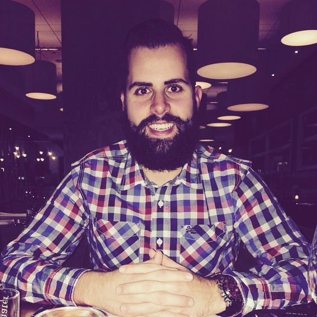

Wie is Jonathan Billen?
Jonathan Billen werd geboren op 4 november 1989 in Leuven (Vlaams-Brabant), waar hij ook jarenlang woonde en naar school ging. In 2008 studeerde hij af als boekhouder maar helaas zag hij zichzelf niet voor de rest van zijn leven andermans boekhouding doen. Hij begon dus opnieuw te studeren in avondonderwijs en ging op interimbasis aan de slag om geld in het laadje te brengen. Nadat hij zijn opleiding had afgewerkt kreeg hij de kans om in de automobiel sector te beginnen werken en heeft 10 jaar in deze sector gewerkt. In 2015 kwam hij Isaura tegen en samen hebben zij enkele jaren nadien een huisje gebouwd in het mooie Neerlinter, gelegen in de Oostelijke helft van het Hageland, waar ze sinds 2019 wonen. Sinds 2020 hebben zij samen een dochtertje, Manou, waar ze dol verliefd op zijn.
Alles wat wielen en een motor heeft sprak hem al op vroege leeftijd aan en toen hij 13 jaar was kreeg hij zijn eerste crossmotor op kerstmis. Sindsdien heeft hij dan ook de microbe van de motorsport te pakken gekregen. Toen hij het te druk kreeg met zijn studies heeft hij deze hobby helaas even aan de kant moeten zetten maar nadien is de motorsport teruggekeerd in de vorm van een auto. Vanaf dan gaat er een groot deel van zijn vrije tijd naar alles wat met auto's & moto's te maken heeft. Van het (ver)bouwen van auto's tot het bijwonen van een race tot zelf op het circuit rijden.
Naast de motorsport is hij ook steeds nieuwsgierig geweest naar de laatste nieuwe technologie op vlak van elektronica. Zo koopt hij graag de laatste nieuwe "gadgets" en volgt hij deze op de voet. Zoals de meesten jongens van zijn leeftijd heeft hij in zijn beginjaren een PlayStaion gehad en speelt hij tot op vandaag nog graag Games op console maar ook op de PC. Mede door Games op de PC te spelen in zijn tienerjaren had hij ook interesse in het bouwen van websites. Zo maakte hij websites voor onder meer "Clans" die hij samen met zijn vrienden en klasgenoten vormden op verschillende games.
Vandaag de dag volgt hij de opleiding Hybride App Ontwikkelaar en hoopt hij zo in de toekomst meerdere en mooiere websites en app's te mogen bouwen.